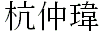

Chung-Wei Hang []
chang@ncsu.edu Software Engineer IBM Research Triangle Park, NC |
Aragorn: Eliciting and Maintaining Secure Service Policies
Nirav Ajmeri, Chung-Wei Hang, Simon D. Parsons, and Munindar P. Singh
IEEE Computer, volume 50, issue 12, pages 50−58, June 2017
Shin: Generalized Trust Propagation with Limited Evidence
Chung-Wei Hang, Zhe Zhang, and Munindar P. Singh
IEEE Computer, volume 46, issue 3, pages 78−85, March 2013.
Generalized Framework for Personalized Recommendations in Agent
Networks
Chung-Wei Hang and Munindar P. Singh
Journal of Autonomous
Agents and Multi-Agent Systems
(JAAMAS), volume 25(3), pages
475−498, 2012.
Trustworthy Service Selection and Composition
Chung-Wei Hang and Munindar P. Singh
ACM Transactions on
Autonomous and Adaptive Systems
(TAAS), volume 6(1), pages 5:1−5:17, February 2011.
A Probabilistic Approach for Maintaining Trust Based on
Evidence
Yonghong Wang, Chung-Wei Hang, and
Munindar P. Singh
Journal of Artificial Intelligence Research
(JAIR), volume 40,
pages 221−267, 2011
A Mechanism for Cooperative Demand-Side Management
Guangchao Yuan, Chung-Wei Hang, Michael N. Huhns, and Munindar P. Singh
Proceedings of the 37th IEEE International Conference on Distributed Computing Systems
(ICDCS), pages 361−371, June 2017.
Towards Argumentation with Symbolic Dempster-Shafer
Evidence
Yuqing Tang, Chung-Wei Hang, Simon
Parsons, and Munindar P. Singh
Proceedings of the 4th
International Conference on Computational Models of Argument
(COMMA), pages 462−469, September 2012
Behind the Curtain: Service Selection via Trust in Composite
Services
Chung-Wei Hang, Anup K. Kalia, and Munindar P. Singh
Proceedings of the 19th International Conference on Web Services
(ICWS), pages 9−16, June 2012
From Quality to Utility: Adaptive Service Selection
Framework
Chung-Wei Hang and Munindar P. Singh
Proceedings of the
8th International Conference on Service Oriented Computing
(ICSOC), pages 456−470, December 2010
Operators for Propagating Trust and their Evaluation in Social
Networks
Chung-Wei Hang, Yonghong Wang, and Munindar P. Singh
Proceedings of the 8th International Joint Conference on Autonomous
Agents and MultiAgent Systems
(AAMAS), volume 2, pages 1025−1032, May 2009
An Adaptive Probabilistic Trust Model and its Evaluation
Chung-Wei Hang, Yonghong Wang, and Munindar P. Singh
Proceedings of the 7th International Joint Conference on Autonomous
Agents and MultiAgent Systems
(AAMAS), volume 3, pages 1485−1488, May 2008
Trust-Based Recommendation
Based on Graph Similarity
Chung-Wei Hang and Munindar P. Singh
The 13th AAMAS
Workshop on Trust in Agent Societies
(Trust), May 2010
Selecting Trustworthy Service
in Service-Oriented Environments
Chung-Wei Hang and Munindar P. Singh
The 12th AAMAS
Workshop on Trust in Agent Societies
(Trust), May 2009
A Decentralized
Multi-agent Service Lookup Mechanism: Cooperation and communication
without center agents in RoboCup rescue
Chung-Wei Hang
The Second International Workshop on
Collaboration Agents
(COLA), September 2004
Probabilistic Trust Models for Social and Service
Networks
PhD Dissertation, North Carolina State
University, April 2011.
A Decentralized Multi-agent Service Lookup Mechanism
Master Thesis, National Chiao Tung University, June 2004
Last updated: Jan, 2018